Dewan HIFI FMIPA Unpad
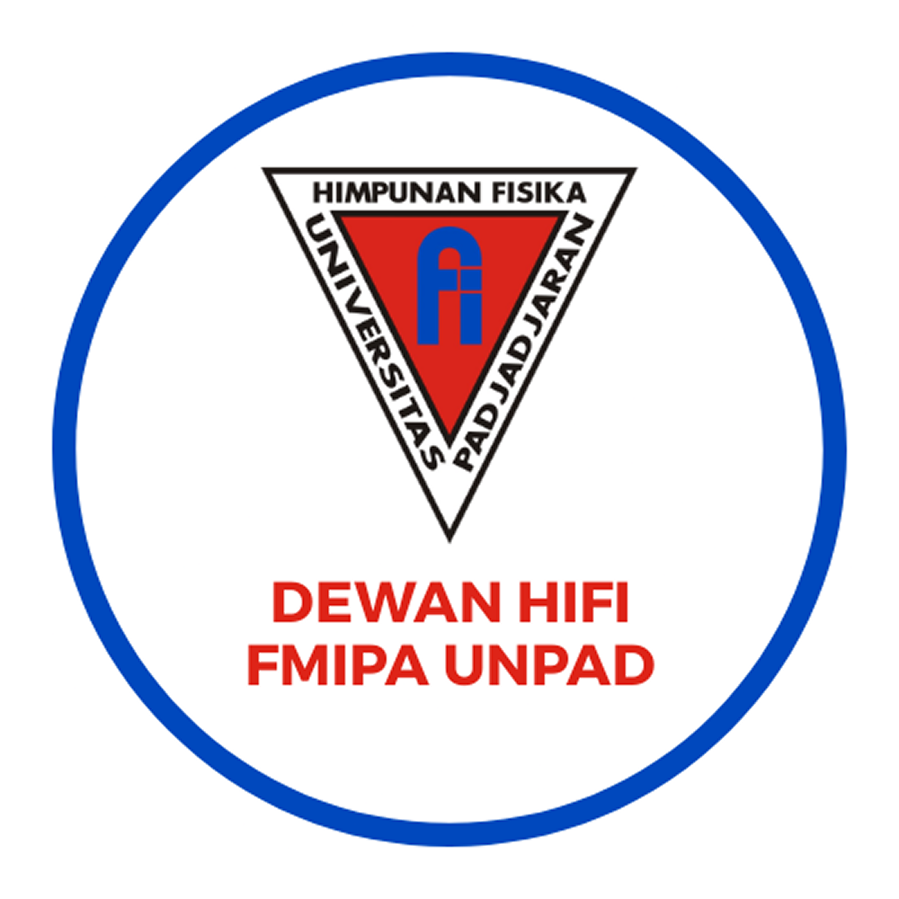
Badan legislatif mahasiswa yang berkomitmen mengemban amanah, menjaga konstitusi, dan memperjuangkan kepentingan seluruh anggota organisasi.
Dewan dipimpin oleh Ketua Dewan dan didukung oleh para Ketua serta Anggota Komisi yang berdedikasi dalam menjalankan fungsi legislasi dan pengawasan.
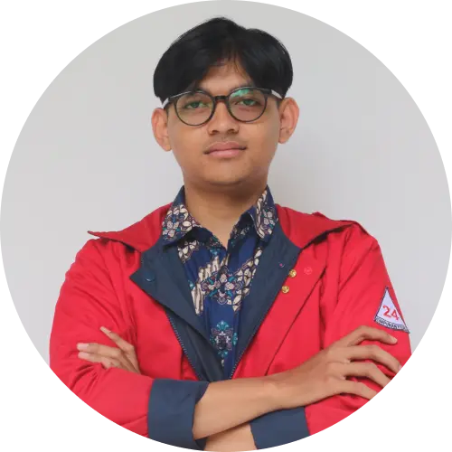
AMMemimpin seluruh rapat dewan, mengkoordinasikan antar komisi, serta menjadi representasi dewan dalam forum eksternal. Bertanggung jawab penuh atas arah kebijakan dan pengambilan keputusan strategis organisasi.
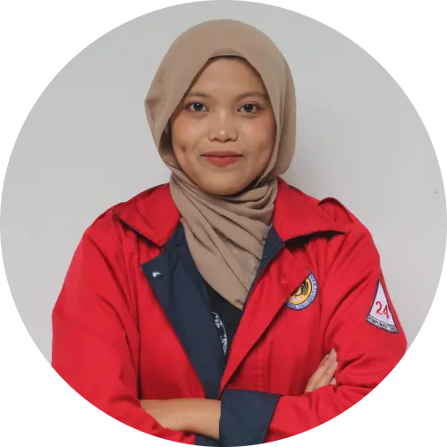
AG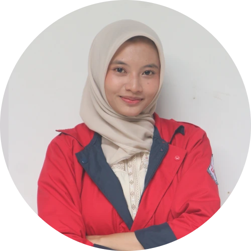
AL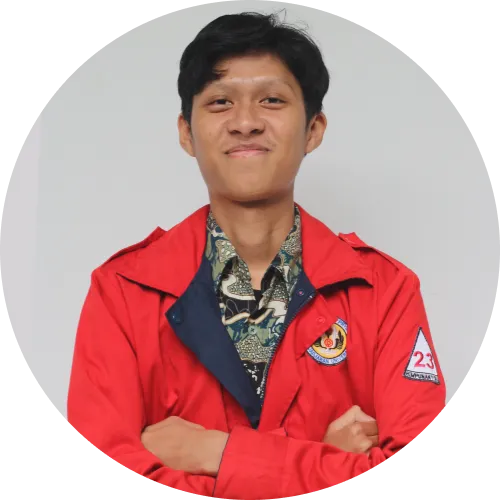
RP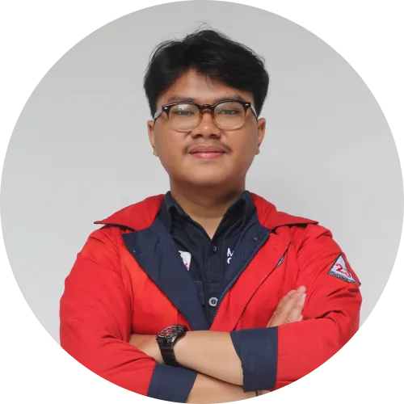
MR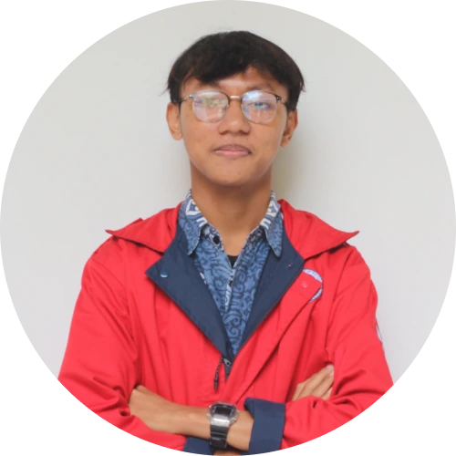
FF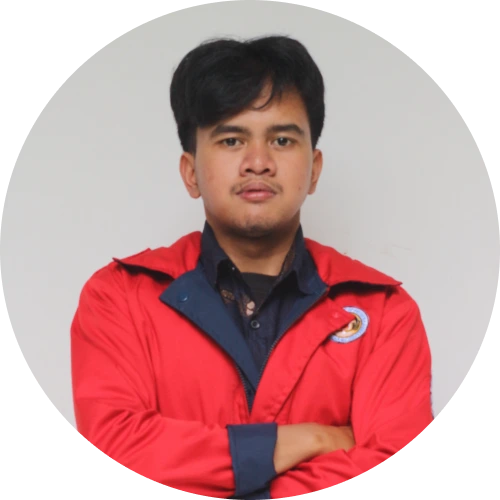
AN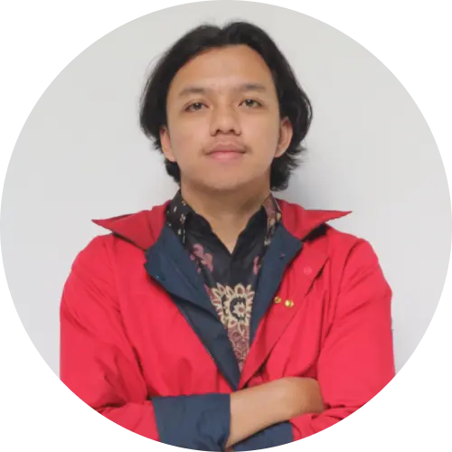
FA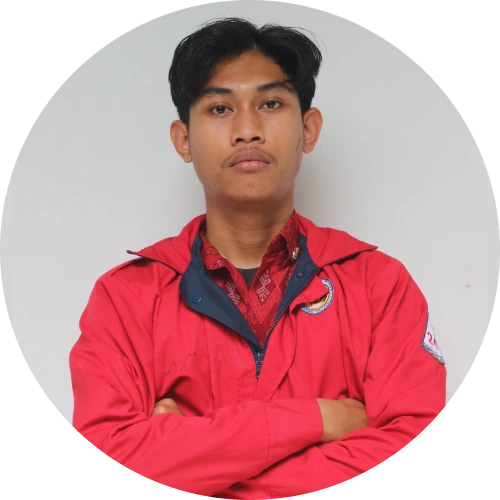
AC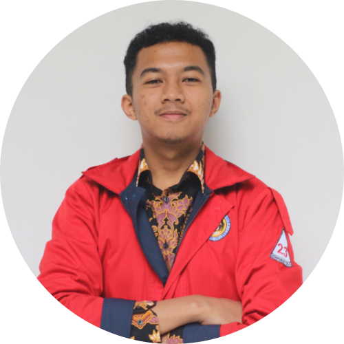
FA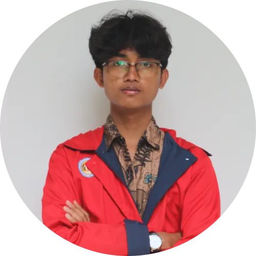
MT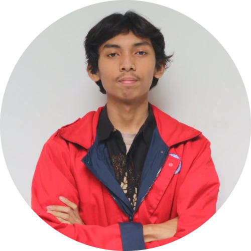
AZ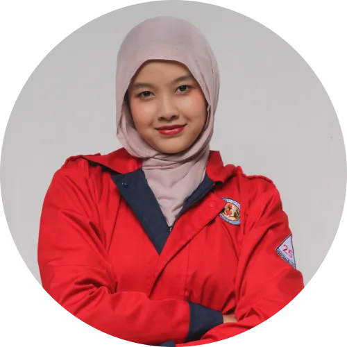
PN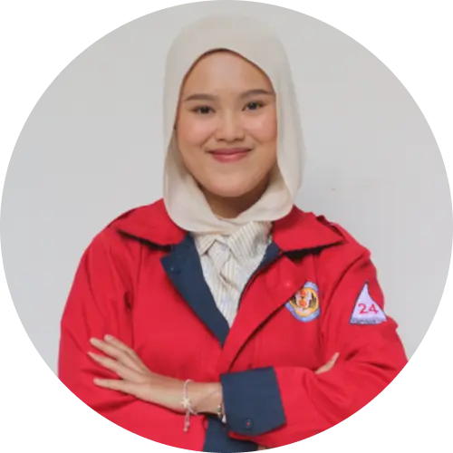
DH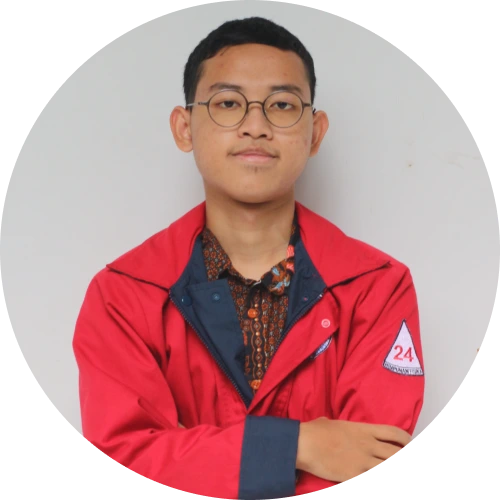
HA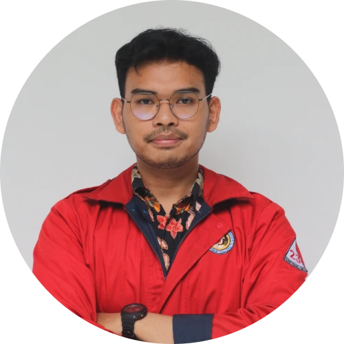
DT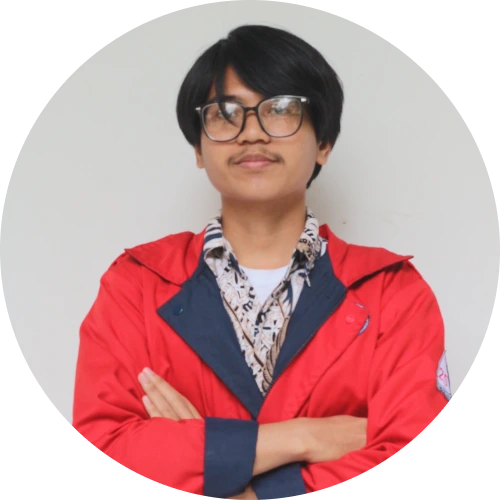
AH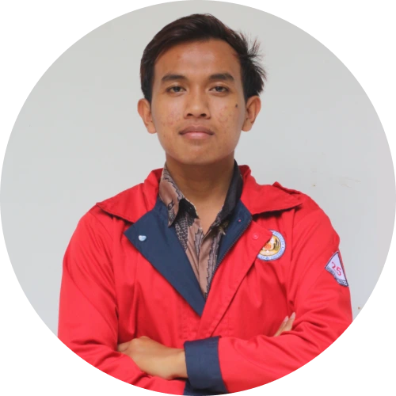
AS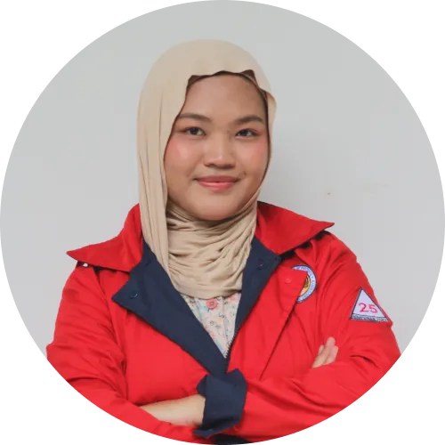
ISTiap komisi menjalankan fungsi legislasi, pengawasan, dan anggaran dalam bidangnya untuk memastikan organisasi berjalan sesuai konstitusi dan kepentingan anggota.
Lembaga independen yang dibentuk Dewan untuk menyelenggarakan pemilihan umum secara jujur, adil, dan transparan.
Pemilu HIFI FMIPA Unpad dilaksanakan secara efektif dan efisien berdasarkan asas langsung, umum, bebas, rahasia, jujur, adil, dan demokratis.
Komisi Pemilihan Umum (KPU) adalah lembaga ad hoc yang dibentuk oleh Dewan untuk menyelenggarakan proses pemilihan umum dalam lingkup organisasi secara independen dan tidak memihak kandidat manapun.
Panitia KPU HIFI FMIPA Unpad diawasi oleh DE HIFI FMIPA Unpad dan wajib melaporkan setiap rencana dan atau program Pemilu kepada DE HIFI FMIPA Unpad dalam waktu yang disepakati bersama.
Forum pleno tertinggi organisasi yang melibatkan seluruh anggota aktif — perwujudan kedaulatan tertinggi yang dilaksanakan secara demokratis.
Musyawarah Anggota (MUSANG) adalah forum pengambilan keputusan tertinggi dalam HIFI FMIPA Unpad. Melalui MUSANG, seluruh anggota menjalankan kedaulatan organisasi untuk menentukan arah kebijakan, mengevaluasi kinerja lembaga, serta menetapkan keputusan strategis yang mengikat seluruh komponen organisasi.
Seluruh kegiatan dan kebijakan Badan Pengurus serta Dewan berlandaskan pada konstitusi HIFI FMIPA Unpad.
Kalender kegiatan Dewan HIFI FMIPA Unpad secara real-time.
Ada keluhan, masukan, atau usulan? Sampaikan langsung atau hubungi kami lewat platform di bawah ini.